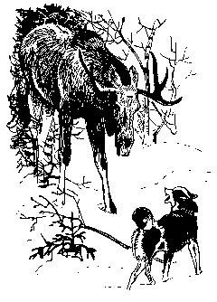

А. Лишина, О. Лишин
ЖУЛИК
Светлой майской ночью нас разбудил выстрел и отчаянный собачий визг. Выскочив на улицу, Сергей увидел, что его Жулик с мордой, залитой кровью, крутится на одном месте. В воздухе ещё не рассеялся запах пороха. Сергей упал возле ослепшей собаки и, обхватив её руками, заплакал.
С Жуликом я был знаком уже два года - с тех пор, как подружился с его хозяином. Помню дождливую осеннюю ночь, когда к нашей лесной избушке подошёл медведь. Его, наверное, интересовала лошадь, закрытая в небольшой конюшне. Четыре собаки с визгом забились под нары, а Жулик сильным прыжком распахнул дверь и исчез.
Схватив ружья, мы выскочили за собакой. Рядом с избой в кромешной тьме слышался яростный лай. Мы бросились туда, но лай стал быстро удаляться и вскоре затерялся в шуме дождя и реки...
Спустя полчаса за дверью послышалось царапанье. Открыли - на пороге появился Жулик, мокрый, грязный. Он отряхнулся, окатив нас водой, молча постоял и улёгся у порога.
Эта история повторялась раза три и каждый раз одинаково: собаки прятались в избушке, и только Жулик, заслышав приближение зверя, вылетал на улицу и гнал его прочь.

После очередного переполоха мы сняли с морды Жулика клок медвежьей шерсти. Напасть на медведя в одиночку, да ещё и в темноте, решится не каждая промысловая лайка, не раз охотившаяся на медведей. А у Жулика такого опыта не было. Зато он ухитрялся останавливать для охотника лося в такое время зимы, когда собаки с трудом пробивают себе дорогу даже по лыжне. Другие собаки могли потерять уходящую "верхом" - по вершинам деревьев - белку или куницу, ошибаться, облаивая "пустое" дерево, с которого зверек уже ушел, но на мерный, чуть глуховатый лай Жулика можно было идти уверенно: зверь или птица здесь.
Я не раз слышал от старых охотников, что собака нередко приобретает черты характера своего хозяина. Если это так, то Жулика можно считать прекрасным примером. Азартный на охоте, безрассудно смелый, он становился надёжным другом тех, кто сумел завоевать его доверие.
Внешность Жулика была самой заурядной. Он напоминал скорее дворнягу, чем лайку. Красили его только глаза - карие, ясные, со спокойным и внимательным выражением.
И вот теперь эти глаза залиты кровью, изуродованы, обожжены выстрелом в упор. Больше они не засветятся по-человечьи, когда вечером у костра пёс положит голову тебе на колени. Какой-то мерзавец или просто трус сделал это подлое дело.
... Жулька постепенно привыкал к слепоте, стал реже натыкаться на предметы. У него появилась манера на бегу высоко поднимать лапы, чтобы не споткнуться. Мы с женой взяли его к себе: Сергею в тайге он больше не мог быть помощником. Словно поняв, в чём дело, Жулик с первого же дня признал наш дом своим. Целыми днями он лежал у калитки, подставив зимнему солнцу изувеченную морду. Характер у него стал мягче. Прежде он неохотно позволял ласкать себя, только сам изредка, в виде привета, ткнётся на бегу носом в ладонь и промчится дальше. Теперь же он по нескольку раз в день подходил к кому-нибудь из нас, трогал лапой и терпеливо ждал, когда его погладят. В остальном пёс не изменился. Он остался таким же драчливым и задиристым, и собаки по-прежнему отступали перед ним. Как и раньше, он не терпел посторонних людей около своего дома и не обращал на них никакого внимания в любом другом месте, пока его не задевали. Но, ослепнув, он чувствовал приближение чужих гораздо раньше, чем остальные собаки.
Казалось, Жулик примирился со своей участью. Он не пытался уходить за Сергеем в лес на работу, как раньше. А приходя в дом Сергея, ласкался и охотно брал угощение, но неизменно уносил его к нашему дому и только здесь съедал. Какие мысли бродили в рыжей лобастой голове?
И вот однажды Жулик исчез. Поиски ничего не дали. Шли дни, за окнами шумела тайга, мела метель, а Жулька всё не появлялся. Мы потеряли всякую надежду.
На десятые сутки, ночью, Сергей возвращался на лыжах с дальнего обхода, ещё ничего не зная о случившемся. В тридцати километрах от дома ему сказали, что на днях рыжая собака, очень похожая на его Жулика, долго металась по льду реки перед большой наледью и, не найдя сухой дороги, повернула обратно.
Сергей уже подходил к селу, когда в стороне от дороги, в темноте густого ельника, послышался знакомый лай. Пёс работал: он нашёл дичь и теперь призывал хозяина. Жулька... Ещё не веря себе, Сергей свистнул, а спустя несколько минут на дорогу выскочил рыжий косолапый пёс.
Так и не смог рассказать нам Жулик, почему он ушёл из дому. Или соскучился по старому хозяину? Но ведь он часто виделся с Сергеем. Скорее всего, стосковался пёс по вольной лесной жизни, по своей тяжёлой, но радостной работе.
Мы написали о Жулике свердловским врачам-хирургам. Вложили в конверт фотографию, с которой пытливо смотрят его умные глаза. Просили сделать операцию, хотя бы в целях эксперимента, пусть даже опасного. Долго с волнением ждали ответа. И вот ответ пришёл. Нас приглашали приехать.
Удивительно спокойно вёл себя Жулик в дороге. Никогда не бывавший в городе, весь свой век проживший среди запахов и звуков леса, он не жался к ногам, не шарахался от близкого шума моторов. Спокойно, насторожённо, чутко прислушиваясь к незнакомым запахам и звукам, он шёл рядом со мной по оживлённым улицам Свердловска. Его толкали прохожие - он словно не замечал их.
В большой городской больнице нас встретили приветливо. Жулика поместили в просторную клетку в комнате, где по соседству, тоже в клетках, лаяли, рычали и визжали другие собаки. Хирург, молодая женщина, после осмотра Жулика сказала мне, что операция будет сложной, но надежда на успех есть, если только пёс не потревожит послеоперационных швов.
Наступили тревожные дни. Первое время, после моего ухода, Жулик беспокоился, выл, рвался из клетки. Потом, видимо, понял, что я его не бросил, перестал волноваться, но всякий раз встречал меня радостным визгом.
Каждый день, закончив работу, я спешил в клинику, покупая по дороге что-нибудь вкусное "с собачьей точки зрения".
Операция прошла удачно. Самым поразительным было то, что Жулик, не терпевший даже запаха чужих людей, теперь позволял посторонним делать с собой всё, что угодно. Швы снимали ему без наркоза, не надевая намордника, и этот пёс, который славился по всем окрестным посёлкам своей злобностью, стоял спокойно даже тогда, когда ему делали уколы. Я не держал его, только слегка поглаживал по голове.
Теперь оставалось только ждать. Зрение должно было частично восстановиться через несколько месяцев.
Но... случилось нелепое. До сих пор не могу избавиться от тяжёлого чувства вины: а всё ли было сделано, чтобы этого не случилось?
На вокзале неожиданно выяснилось, что на город наложен карантин. Может быть, заболела бруцеллёзом какая-нибудь коза, может, дело было серьёзное, но твёрдые в своей решимости железнодорожники горой стояли на пути вывоза из города любого живого существа. Добиться разрешения так и не удалось. Командировка у меня кончилась, и не было другого выхода, как оставить Жулика у приятеля на окраине города в небольшом сарайчике во дворе дома. Так я и сделал, надеясь через месяц приехать в Свердловск снова. До сих пор царапает душу щемящий Жулькин вой, когда я уходил от него. Как я мог объяснить ему, что вернусь за ним?
Через месяц мне отказали в просьбе о коротком отпуске, а жену не отпускал из дома крохотный сын. Разрешение на поездку удалось получить только через три месяца.
С волнением подходя к знакомой калитке, я уже издали искал глазами Жулика.
Его не было видно. Меня кольнуло нехорошее предчувствие. Войдя во двор,
я бросился к сараю. Там было пусто. От хозяйки я узнал, что в последнее
время Жулик начал беспокоиться. Недели две назад он снял ошейник и ушёл.
Приятель отыскал его в ближнем лесу. После этого Жулика посадили на цепь
в сарае. Неделю назад он снял ошейник, подкопал сарай и снова ушёл. На
этот раз найти его не удалось. Мы с приятелем опросили чуть ли не всех
собачников города, обегали все окрестности. Жулька исчез.
А восемь месяцев спустя, в начале зимы, километрах в пяти от нашего села, на лесной дороге Сергей увидел убитую машиной собаку. Рыжая, лохматая, коротконогая, она очень напоминала Жулика. Голова её была сильно искалечена ударом, поэтому точно определить было нельзя. Но во всей округе не было в те времена собаки, похожей на Жулика.
Мог ли полуслепой пёс пройти триста километров, отделяющих Свердловск от его родины? Старожилы Севера знают подобные случаи. И это очень похоже на Жулика. Только горько думать, что если пёс перестал ждать и ушёл, значит, он разуверился в людях, которых считал друзьями, которым верил, и погиб с мыслью, что его предали.